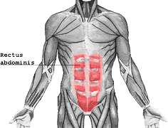
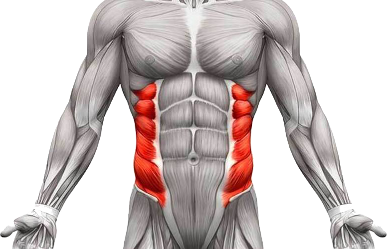

De abs bestaan uit 3 verschillende spieren, de Rectus Abdominis, de Oblique Muscles en de Transversus Abdominis. Die laatste is minder belangrijker tijdens het trainen van je abs.
Rectus Abdominis
De Rectus Abdominis is een lange, rechte spier die zich bevindt in het midden en aan de voorzijde van de torso. Wanneer je denkt aan een six-pack, worden deze spieren bedoeld.
Wanneer je vetpercentage laag genoeg is, wordt de sixpack, soms ook wel een eightpack (8) zichtbaar.
Deze spier kan je op veel verschillende manieren trainen. De meest voorkomende oefeningen zijn Sit-Ups, Abb Rollout, Crunches, V-Up, Plank, ...
Oblique Muscles
Deze spieren liggen aan weerszijde van de Rectus Abdominis. Hun grootste doel is het roteren van de torso. Wanneer deze spieren voldoende ontwikkeld zijn en je vetpercentage laag genoeg is, zijn deze ook zichtbaar.
Enkele oefeningen om deze spier te trainen zijn Standing Side Bends, Seated Twists, Side Crunches, Russian Twists, Side Plank, ...